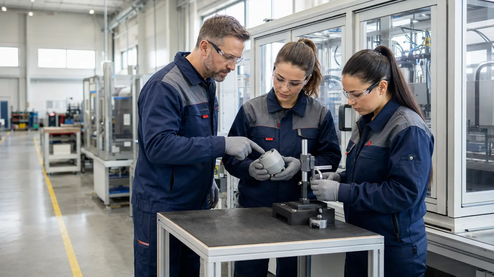

Wyodrębniony etap
Można jasno opisać wejście, czynności, zasoby i rezultat, np. pakowanie gotowych wyrobów.
Dla zakładów, które chcą przekazać wykonawcy określony fragment produkcji — z własnym zespołem, nadzorem, KPI i punktem odbioru.

Outsourcing produkcji w Equss oznacza, że przejmujemy wyodrębniony etap produkcji (np. montaż, pakowanie, obsługę linii), organizujemy własny zespół z nadzorem i rozliczamy się za uzgodniony rezultat, np. za sztukę, operację lub wolumen.
Można jasno opisać wejście, czynności, zasoby i rezultat, np. pakowanie gotowych wyrobów.
Chcesz płacić za sztukę, operację lub wolumen, a nie za godziny pracy.
Etap wymaga elastycznej obsady zmian, którą wykonawca planuje sam.
Potrzebujesz stałego standardu pracy, raportu i ścieżki eskalacji.
Wejście, czynności, rezultat, ograniczenia i wymagania BHP.
Role, zasoby, KPI, podział odpowiedzialności i model rozliczenia.
Kontrolowany start na uzgodnionym fragmencie procesu.
Korekty organizacji, standardu pracy i raportowania.
Rozszerzenie wolumenu po odbiorze pilotażu.
Odpowiedzi są przed formularzem, aby zakres był jasny przed kontaktem.
Tak, jeśli proces da się opisać i odebrać jakościowo. Rozliczenie za sztukę lub operację wymaga uzgodnienia zasad odbioru, poprawek i rozliczania przestojów.
Nadzór i organizacja pracy są po stronie Equss. Klient określa wymagania i odbiera rezultat, ale nie kieruje bieżąco pracą zespołu wykonawcy.
Oceniamy to po analizie procesu. Decydują m.in. wolumen, liczba zmian, lokalizacja i koszt uruchomienia.
Przygotujemy rekomendację zakresu, modelu rozliczenia i realnego harmonogramu.